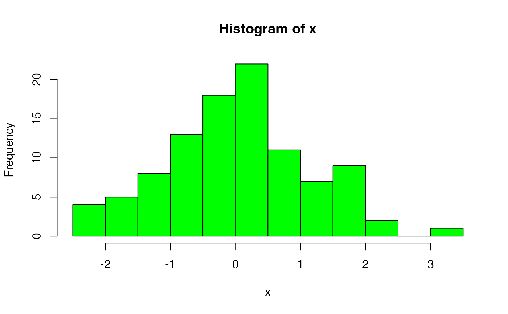

histogram.RdThis function generates a histogram for a numeric variable in a given data frame.
histogram(data, var, bins = 10, col = "lightpink")A data frame containing the dataset.
The name of the numeric variable to create a histogram for.
The number of bins for the histogram (default is 10).
The color of the histogram bars (default is "lightpink").
data <- data.frame(x = rnorm(100))
hist1 <- histogram(data, var = "x", bins = 20, col = "green")

print(hist1)
#> $breaks
#> [1] -2.5 -2.0 -1.5 -1.0 -0.5 0.0 0.5 1.0 1.5 2.0 2.5 3.0 3.5
#>
#> $counts
#> [1] 4 5 8 13 18 22 11 7 9 2 0 1
#>
#> $density
#> [1] 0.08 0.10 0.16 0.26 0.36 0.44 0.22 0.14 0.18 0.04 0.00 0.02
#>
#> $mids
#> [1] -2.25 -1.75 -1.25 -0.75 -0.25 0.25 0.75 1.25 1.75 2.25 2.75 3.25
#>
#> $xname
#> [1] "data[[var]]"
#>
#> $equidist
#> [1] TRUE
#>
#> attr(,"class")
#> [1] "histogram"